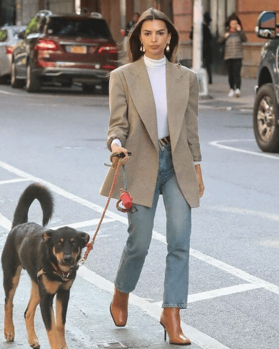
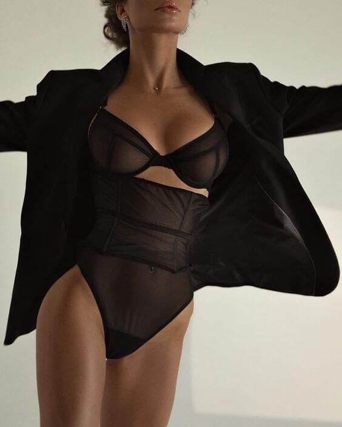
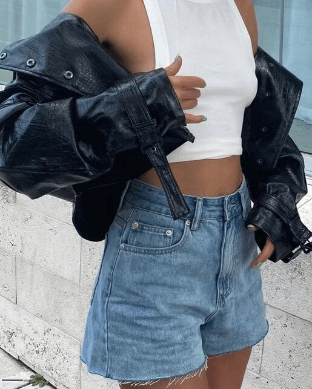

Trend 1: Stille luxe

Bron
Lydia Tár mag dan een fictief personage zijn, ze is een bonafide modemuze. In korte tijd werd Tár
synoniem voor een soort mondig minimalisme, voornamelijk gebaseerd op (monochrome) tailoring
(zie The Row en Proenza Schouler), dat volledig in lijn is met het instinct van ontwerpers om
zaken strakker aan te pakken en zich te richten op de praktijk. Broekpakken en grote jassen
zonder poespas, maar elegant en essentieel voor het creëren van een balans tussen werk en privé.
Trend 2: Hypervrouwelijk

Bron
Lingerielooks kwamen tevoorschijn om een hypervrouwelijk element toe te voegen aan een seizoen
waarin het pak centraal staat. De eenvoud van de grunge slipdress blijft overheersen, maar
ontwerpers onderzochten ook een soort BUtterfield 8-achtige zwoelheid met kanten versieringen.
Trend 3: Back to basics

Bron
De rush van de modewereld naar het minimalisme maakt deel uit van een grotere herwaardering van
de klassieke garderobe. Eenvoud is daarbij het toverwoord. Voornamelijk de preppy meets
street-esthetiek wint terrein, met modehuizen als Gucci, Miu Miu en Valentino die de leiding
nemen.